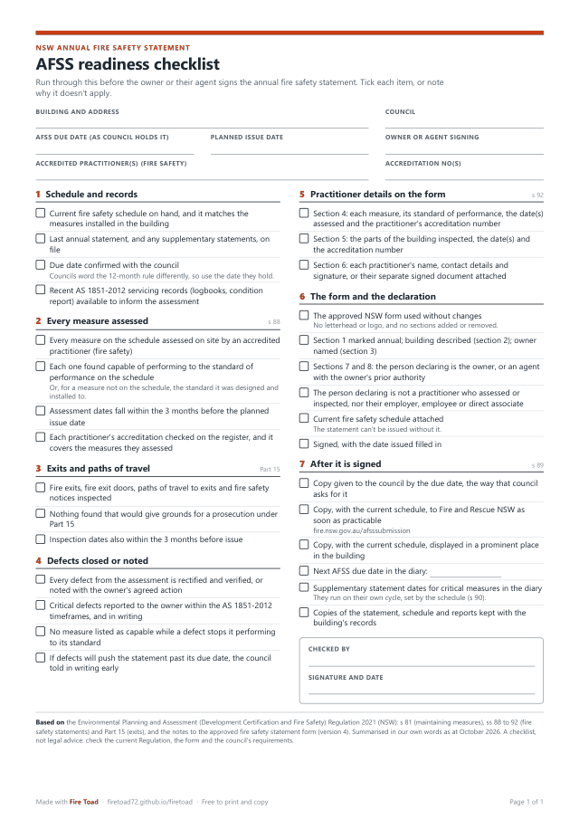
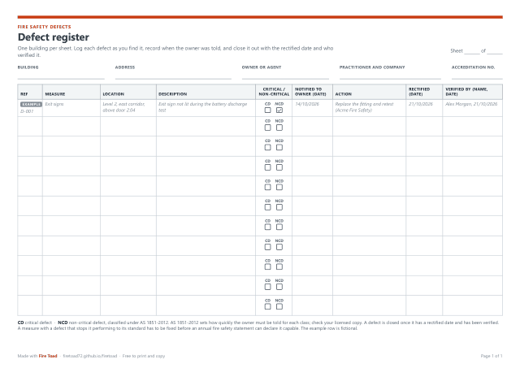
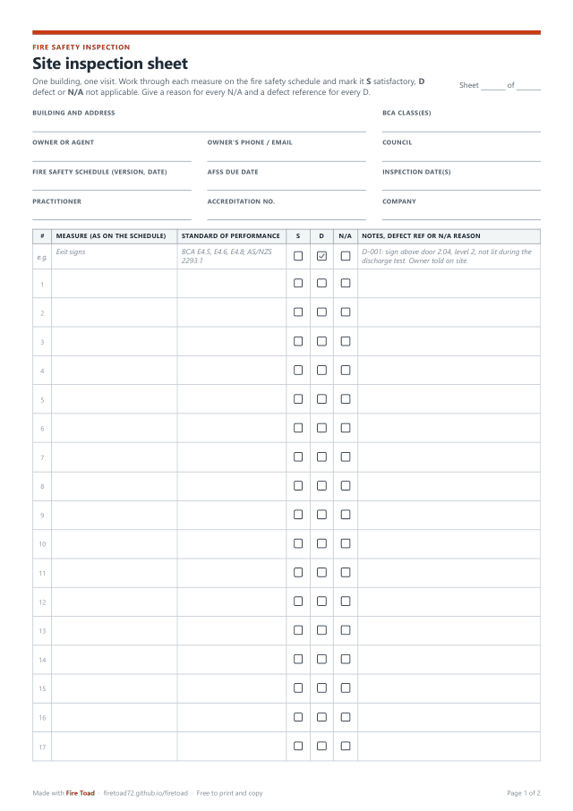

Home / Free downloads
Free downloads for fire safety practitioners
Last reviewed 25 October 2026 · Printable A4 PDFs · No sign-up
Three clean A4 forms for site work in NSW: a checklist to run before the owner signs the annual fire safety statement, a defect register, and a site inspection sheet. Print them, copy them, hand them to your team. They're free, with nothing to sign up for.

AFSS readiness checklist (NSW)
PDF · A4 portrait · 1 page · 66 KB
Run through it before the owner or their agent signs the annual fire safety statement, so nothing gets missed at the last step.
- The current fire safety schedule and the council's due date
- Every measure assessed, with dates inside the 3 months before issue
- Exits, fire exit doors, paths of travel and notices inspected
- Defects closed or noted, and the practitioner details on the form
- Copies to the council and Fire and Rescue NSW, and a copy displayed in the building
Download the checklist (PDF)

Defect register template
PDF · A4 landscape · 1 page · 68 KB
One sheet per building for keeping track of defects from the day you find them to the day they're verified as fixed.
- Reference, measure, location and description
- Critical or non-critical tick boxes
- The date the owner was told, and the action agreed
- The rectified date and who verified it
Download the defect register (PDF)

Site inspection sheet
PDF · A4 portrait · 2 pages · 106 KB
A clipboard sheet for one building and one visit. Copy the measures from the fire safety schedule and mark each one as you go.
- Building, owner, schedule, practitioner and accreditation details up top
- 30 rows, each with S, D and N/A boxes and room for notes, defect references and N/A reasons
- Exits and paths of travel: fire exits, fire exit doors, paths of travel and fire safety notices
- Totals, critical defects reported, closing notes and sign-off
Download the inspection sheet (PDF)
Free tool
AFSS due-date helper
Enter the date of the last annual fire safety statement, the fire safety certificate or the council's due date. See the next due date, the days left, the 3-month assessment window, and save it to your calendar. Works in your browser, with nothing sent anywhere.
Open the helper
Rather do this on your phone?
Fire Toad is an iPhone app that does the same job on site. It walks you through every measure on the building's schedule (Satisfactory, Defect or N/A, with photos and notes), logs defects as you go and keeps an open defects register with each rectification. When you start the NSW AFSS, a readiness check lists anything that stands in the way of issuing it, each linked to its fix. It works offline and needs no account.
Get Fire Toad on the App Store
Free to download, with your first 3 reports included. Fire Toad Pro, a monthly or yearly subscription, covers reports after that.
These templates are working aids for practitioners, not the approved NSW fire safety statement form, and not legal advice. They summarise the Environmental Planning and Assessment (Development Certification and Fire Safety) Regulation 2021 and the approved form's notes in plain language, citing section numbers only. Check the current Regulation, the building's fire safety schedule, your licensed copies of the standards and your council's requirements. The example rows are fictional. Fire Toad is not affiliated with the NSW Government, Fire and Rescue NSW or Standards Australia.